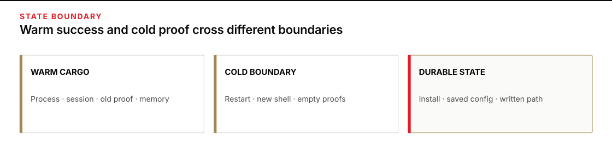
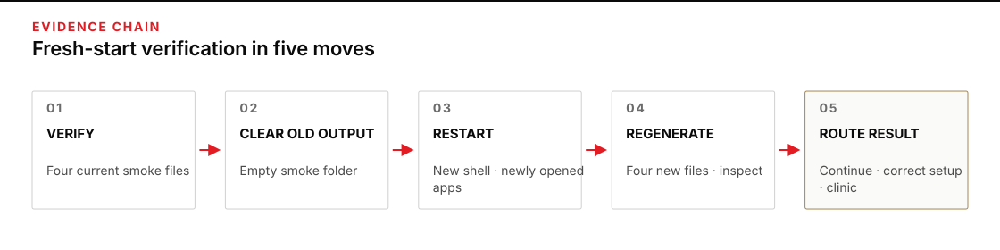
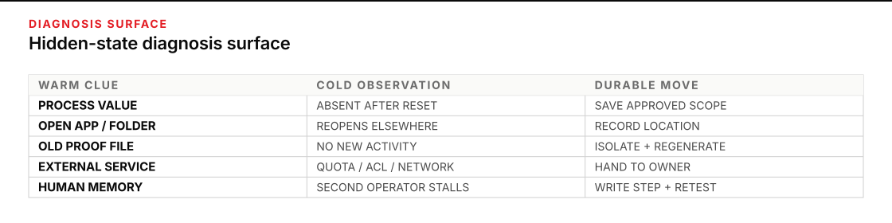

Prove the workstation survives the night
Use this protocol after the four setup smoke proofs appear green, or before you trust the laptop for work whose evidence matters. Plan 45–60 minutes, including one safe restart. You will leave with a cold-start run record that ties a declared starting state to newly generated proof files, plus recovery notes for anything that depended on an open window or a remembered fix.
Complete the Pre-work final proof first; it establishes the current tool commands and Monday readiness gate. Those smoke proofs answer, “Can each tool work now?” Continue here when the harder question is: “After the temporary help from this setup session is gone, can the workstation reach the same observable finish line?”
Cold does not mean wiping the laptop or reinstalling anything. It means removing the warm state that your claim should not depend on: open processes, session-only variables, remembered working locations, running background services, cached screens, and old output files. The durable settings you intend to rely on stay in place and are tested.

Figure transcript
Warm cargo includes open processes, session-only variables, a remembered working folder, running services, cached screens, and old proof files. The cold boundary closes relevant processes, restarts the machine when safe, opens a fresh shell and apps, removes old outputs from the observation folder, and withholds coaching. Durable state includes installed tools, saved user or machine settings, recorded configuration, intended credential state, and written instructions. A cold pass occurs only when that durable state generates new proof after the boundary; the old warm result remains evidence of an earlier activity, not the cold one.
Make hidden help visible
A successful warm run can be perfectly real and still support the wrong claim. The tool may have inherited a key from the terminal that launched it. A path may have been added only to that terminal. The app may still be open on the correct project. A local service may be running because you started it hours ago. The folder may contain yesterday’s proof. Each condition can help the run without being part of durable workstation state.
This carryover is not a corner case. A large systems study found that state from earlier trials can persist through caches, files, environment variables, configuration, and other machine components; the authors require each run to begin from a defined clean state before comparing outcomes. Their point transfers directly to setup evidence: if the start state is not controlled, the result may belong partly to whatever ran before it. See Duplyakin et al., Avoiding the Ordering Trap in Systems Performance Measurement, especially the clean-state procedure in Section 3.
Cold is a boundary, not a feeling
There is no universal “fully cold” laptop. A restart clears some state but preserves installed software, saved configuration, disk caches, credentials, and external account state. That is useful: a cold-start test removes only the help that the readiness claim says should be unnecessary. Write the boundary before the run so that “cold” cannot be softened after a failure.
| State domain | Warm examples | Cold control | Durable state you expect to remain |
|---|---|---|---|
| Process and session | Session-only variables, temporary PATH edits, inherited working folder, open tool process | Restart Windows; open a new PowerShell window and each app anew | User or machine settings, installed executables, saved app configuration |
| Prior evidence | Old smoke files, cached success screen, a service left running | Move old proofs aside; record the empty folder and observe new files appear | The ability to regenerate the expected artifact |
| Machine | Installed runtimes, credential stores, policy, configuration files | Hold these constant and record their observable identity | The declared workstation configuration under test |
| External | Network route, provider availability, key ACL, quota or spending cap | Record the condition; do not pretend a local restart controls it | The account access required by the readiness claim |
| Human and desk | A memorized launch order, copied command, or fixer standing nearby | Follow only the written procedure; no coaching during the run | Instructions another operator can actually use |
Windows gives the process boundary a precise mechanism. A PowerShell process has its own environment, built from user and machine scopes when the process starts, and child processes inherit their parent’s environment. Changing a variable through the session syntax changes only that session; user- and machine-scoped values persist outside it. That is why a warm terminal can succeed while the next terminal or next boot fails. Microsoft documents the three scopes and inheritance in about_Environment_Variables.
State the strength of the claim
For this protocol, repeatability means the same operator obtains the same readiness outcome on the same laptop after a declared reset. Reproducibility is the stronger desk-transfer check: a different operator or meaningfully different safe context obtains that outcome from the written procedure. Metrology uses the same shape—repeatability holds operator, system, location, and conditions close, while reproducibility changes operators, systems, or locations and requires the changed and unchanged conditions to be named. See JCGM 200:2012, repeatability condition and reproducibility condition.
Communities do not use these words uniformly, so the run record carries the operational definition instead of relying on the label. The National Academies likewise defines computational reproducibility around consistent results from the same inputs, steps, methods, code, and analysis conditions. The practical consequence is simple: name the conditions that matter. See Reproducibility and Replicability in Science.
The required outcome here is not identical model wording. It is the invariant the setup gate already names: the intended tool reaches a real model and leaves the expected file on disk with the expected contents. A cold run proves durability only for that observable behavior, on the recorded machine, at that time. It does not package an evidence product for later reconstruction; it tests whether workstation readiness survives a stated loss of warm state.
State inventory and run identity
A state inventory names what the run removes, preserves, and cannot control. Run identity tells another operator which starting context and activity produced the evidence. Record enough to distinguish this cold activity from the warm one without turning the exercise into a software-release record:
- operator, local date and time zone, machine name, Windows edition/build, and architecture;
- last restart time, PowerShell process start time, working folder, and app project folder;
- tool version output and the provider/model pin shown by the current checklist checks;
- cold controls executed, conditions deliberately held constant, and external conditions not controlled;
- prediction, instruction used, expected file, observed contents, supporting file time, and verdict;
- every repair or state change, kept in sequence rather than folded into a success story.
This is provenance in plain form: what item was used, what activity occurred, which person or software bore responsibility, and what item the activity generated. Those are the starting relationships in the W3C PROV-O Recommendation. Research systems such as ReproZip go much further by capturing files, libraries, variables, architecture, and other dependencies automatically; the lesson for a manual workstation check is that environment is part of the result, not scenery around it. See Chirigati et al., ReproZip: Computational Reproducibility With Ease.
A perfectly isolated system is often called hermetic: undeclared host state cannot affect its output. A normal Windows workstation using network services is not hermetic. The useful move is to borrow the design pressure—reduce undeclared inputs and expose the rest. Bazel’s hermeticity guidance explains why isolation from host changes makes an outcome easier to reproduce. Your record must still name the external and local uncertainty that remains.

Figure transcript
First, state one observable readiness claim and its pass invariant. Second, inventory warm state, durable state, held conditions, and uncontrolled external conditions. Third, cross the declared cold boundary and write predictions before inspecting saved state. Fourth, record the empty observation folder, run the canonical proof, and inspect a newly appearing file and its contents; file time supports chronology but does not prove origin or integrity alone. Fifth, issue a bounded verdict that names the tested reset, the dependencies that remained, the conditions not tested, and any handoff owner. The chain is broken when old output substitutes for new generation or when a repair is hidden inside the successful account.
Worked case: green because the room was still warm
Leena finishes the OpenCode section at 20:15. The first attempt cannot see the key or command. While working, she sets the key in the current PowerShell process and temporarily adds the install folder to that process’s search path. She then runs the current OpenCode write proof. The file appears with the right contents. That is a valid warm smoke result.
Leena marks the workstation ready. She does not record which settings were saved for her Windows account and which existed only in the open process. She also leaves from-opencode.txt in the smoke folder.
The deliberate false confidence
The next morning, Leena restarts the laptop, opens the folder in Explorer, and sees from-opencode.txt. She nearly records a cold pass. Her recorded move history identifies it as the file left by the warm activity, while its earlier timestamp only supports that chronology; a timestamp alone cannot establish a file’s origin or integrity. Nothing binds the file to the current state. She changes the verdict to UNTESTED, moves the old file into a clearly named warm-evidence folder, records that the smoke folder is empty, and begins again.
Before opening the tool, she predicts three observations: the fresh-window key check will show a saved user value and a process value; the command check will locate the intended installation; and she will observe a new write proof appear in the previously empty folder with the expected contents. A post-restart file time will support the sequence but will not prove it by itself. She records the prediction first so that a partial success cannot redefine the pass bar.
The fresh-window check shows no saved key. The command is also unavailable. No new proof file can be created. The cold result is a clean failure even though the warm result was real: workstation readiness depended on two pieces of process-only state and one stale artifact.
Recover the durable state, then reset again
Leena does not reinstall at random or preserve the failing terminal as her working environment. She returns to the canonical fresh-window key check and the OpenCode install-and-verify section, follows the current persistent setup path, and records each change as an intervention. If the failure needed deeper layer isolation, she would pause this proof and use The Install Fault Tree; she would not mix diagnosis into the evidence from the first cold attempt.
Then she repeats the reset. After the second restart, the fresh process sees the saved key without revealing it and resolves the tool. Her record shows that the folder was empty before the attempt, that she observed the tool activity, and that a new file appeared with the expected contents. Its post-restart time supports the sequence. Her verdict is bounded:
OpenCode readiness is repeatable from the declared reboot-cold state on this laptop. The proof depended on saved user configuration and current external provider access, not on the original terminal or old output. This does not establish readiness on another Windows account, another laptop, or during a provider outage.
The failure improved the evidence because it exposed exactly what the warm run had been carrying.

Figure transcript
For process environment, a warm-only variable becomes absent after reset, so save it through the approved user or machine path and retest. For an open app or inherited folder, reopening lands elsewhere, so record the project and working location in the procedure. For prior evidence, an old file survives without a new activity, so isolate old output and require a post-boundary artifact. For external service state, local setup reaches a quota, ACL, network, or provider boundary, so record the blocker and hand it to the responsible owner rather than reinstalling. For human memory, a second operator stalls without coaching, so promote the missing launch or decision step into the written path and repeat the transfer.
Run a cold-start proof on a safe context
Plan 25–30 minutes of keyboard time plus the restart. Use only the course smoke folder and the course-issued keys. Save unrelated work first. Do not clear credential stores, change organization policy, uninstall software, or use work data to make the test feel more realistic.
1 · Freeze the claim and prediction
Write: “After a Windows restart, a newly opened PowerShell window and newly opened apps can regenerate all four required smoke files by following the current checklist, without using an old terminal, old output, or an unrecorded step.”
Predict PASS or FAIL for the fresh-window key check, command/version checks, app authentication state, project location, and each new file. Add one reason for every prediction. Do not inspect the saved settings yet.
2 · Inventory what will change
Mark each known state item REMOVE, HOLD, or UNCONTROLLED. REMOVE open terminals, open tool processes, running local services not required by a proof, and old proof files. HOLD installed software, saved configuration, the machine, Windows account, course keys, provider/model pins, and network. Mark provider availability, quota, and organization network behavior UNCONTROLLED.
3 · Preserve old evidence without letting it answer
In Explorer, create a dated folder beside the smoke folder and move the prior from-*.txt proofs into it. Do not delete them. Confirm that the designated smoke folder no longer contains any of the four required proof names. This gives you an empty observation surface while preserving the warm evidence for comparison.
4 · Cross the cold boundary
Save the run record and restart Windows. After sign-in, do not open the old setup chat or accept verbal help. Open a new PowerShell window and the tools only when the checklist calls for them. If a restart is unsafe because work applications or managed-device updates cannot be interrupted, close every relevant process instead and label the result process-cold, not reboot-cold. Do not upgrade that weaker boundary in the verdict.
5 · Capture identity before repair
Record the machine and operator fields, last restart time, new shell start time, working folder, and the cold controls completed. Then use the current checklist to capture secret-safe key presence and the tool/version observations. Never paste a key value into the record.
6 · Run only the current proofs
Use the canonical steps rather than copied commands: the fresh-window key check, the Codex write proof, the OpenCode write proof, the Pi write proof, and the goose write proof. For each one, record start time, exact observation, and whether any approval, navigation, or repair was required.
Inspect the folder in Explorer after every tool. PASS requires the recorded empty-folder check, an observed tool activity, and a newly appearing file with the expected contents. Record the file time as supporting chronology only. File times can be preserved or changed, so they do not prove origin or integrity by themselves. A tool’s statement that it wrote the file remains a claim until the controlled observation and folder result support it.
7 · Inject one stale success
After the genuine checks, create a separate empty folder named stale-success-drill. Temporarily move one old warm proof from the warm-evidence folder into that drill folder. Do not place it over the new cold proof. Before looking at its timestamp, answer: “Would a listing containing this file prove that the corresponding tool passed cold?” Reveal the answer only after you write yours.
Reveal the stale-success answer
No. The recorded move from the warm-evidence folder establishes that this is the earlier file; its timestamp only supports that chronology. The file was not generated by the cold activity. Move it back, remove the now-empty drill folder, confirm the genuine cold proof remains present, and record the injection and recovery.
8 · Record the verdict before fixing a failure
If all four files are new and every required condition holds, mark DURABLE for the boundary tested. If any result needs an old process, an old file, coaching, or a manual step absent from the written path, mark DEPENDENT ON WARM STATE. If external access, policy, authority, or safety prevents the test, mark BLOCKED. Only then return to the relevant checklist section, record the repair, and perform a new cold attempt. Do not overwrite attempt one.
Cold-start run record
Copy one row set per attempt. Keep secret values out; presence, scope, and result are enough.
| Field | Inspectable record |
|---|---|
| Attempt label · operator · local time · time zone | |
| Machine · Windows build · architecture · account context | |
| Last restart · shell start · working folder · app project | |
| Claim and PASS invariant | |
| REMOVE / HOLD / UNCONTROLLED state inventory | |
| Prediction for keys, resolution, authentication, and four files | |
| Empty-folder observation before tool runs | |
| Per-tool observation grid completed | |
| Verdict: DURABLE / DEPENDENT ON WARM STATE / BLOCKED | |
| Remaining uncertainty · next owner · next safe action |
Per-tool observation grid
Complete one row at the keyboard for every required tool. Copy the expected artifact and contents from the linked current proof instead of relying on memory. “Observed time” supports the sequence; the empty-folder record, observed activity, and new artifact together carry the comparison.
| Tool | Identity / version observation | Canonical proof used | Run start | Expected artifact / contents | Observed artifact / contents / supporting time | Approvals / deviations | Per-tool result |
|---|---|---|---|---|---|---|---|
| Codex app | Current Codex proof | PASS / FAIL / BLOCKED | |||||
| OpenCode | Current OpenCode proof | PASS / FAIL / BLOCKED | |||||
| Pi | Current Pi proof | PASS / FAIL / BLOCKED | |||||
| goose | Current goose proof | PASS / FAIL / BLOCKED |
Self-check: predict before reveal
- A tool worked in the setup terminal, but the saved-user key check is empty after restart. Is the setup durable?
- A correct proof file remains after restart, with a timestamp from yesterday. What does it prove about today’s state?
- You close all tool processes but cannot restart the managed laptop. What claim may you make after a successful run?
- A cold run reaches the provider and receives a quota or spending-cap response. Should you reinstall the local tool?
- A second operator succeeds only after you whisper a launch step that is absent from the procedure. Did the desk transfer pass?
Reveal the self-check
- No. The warm result depended on process state. Save the setting through the current checklist path, then start a new cold attempt.
- It proves only that the file is present. The timestamp supports an earlier chronology but does not establish origin by itself, and neither fact proves that the tool can regenerate the file today.
- Only a process-cold result under the named conditions. Restart durability remains untested.
- No. Record the external blocker and hand it to the key owner; the current authentication recovery check identifies that case.
- No. The workstation may be healthy, but the procedure is not transferable. Add the missing step, reset, and let the other operator begin again without coaching.
Transfer the proof to another desk
Choose one harmless work tool whose readiness currently depends on you remembering how it starts. Keep production data, live accounts, and destructive resets outside the test. Write one observable finish line, name a safe cold boundary, and give the procedure to a colleague who did not perform the setup. Stay available for safety, but do not coach the ordinary path.
If the colleague stops because a step, input location, permission, or owner decision is missing, preserve that stop. It is evidence of an undeclared dependency. Add the missing durable instruction only after the attempt is closed, then run again from the same declared boundary. Return to a human owner when the missing state is a credential, policy exception, licensed access, administrator action, or judgment about work risk.
Close with a sentence another operator can challenge: “The named readiness behavior was repeatable after [reset] and transferable to [operator/context], using [written path]; it still depends on [external or held state], and we did not test [boundary].” That sentence is stronger than “works on my machine” because it shows exactly which machine help was removed and which remains.
Sources
- JCGM 200:2012 · International Vocabulary of Metrology — repeatability and reproducibility conditions, including the requirement to name changed and unchanged conditions.
- National Academies · Reproducibility and Replicability in Science — computational conditions required for consistent results.
- Microsoft Learn · about_Environment_Variables — process, user, and machine scopes plus inheritance behavior.
- USENIX ATC ’23 · Avoiding the Ordering Trap in Systems Performance Measurement — carried state, reset-to-clean-state procedures, and order-dependent conclusions.
- W3C Recommendation · PROV-O — entities, activities, agents, and provenance relationships.
- Chirigati et al. · ReproZip: Computational Reproducibility With Ease — source environment, dependencies, configuration, and portable reproduction.
- Bazel · Hermeticity — isolation from undeclared host state as a reproducibility mechanism.